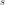

CalibrationStrategy¶
-
class
CalibrationStrategy(*args)¶ Calibration strategy.
- Available constructors:
CalibrationStrategy(range)
CalibrationStrategy(range=[0.117, 0.468], expansionFactor=1.2, shrinkFactor=0.8, calibrationStep=100)
- Parameters
- range
Intervalof dimension 1 Acceptance rate values for which no update of the calibration coefficient is performed.
- expansionFactorfloat,
Expansion factor to use to rescale the calibration coefficient if the latter is too high (greater than the upper bound of range).
- shrinkFactorfloat,
Shrink factor  to use to rescale the calibration coefficient if the latter is too low (smaller than the lower bound of range). If expansionFactor is specified, shrinkFactor must be mentioned too.
- calibrationSteppositive int
Calibration step corresponding for example to
 in the description
of the method
in the description
of the method
getCalibrationStrategyPerComponent()of the RandomWalkMetropolisHastings class.
- range
Notes
A CalibrationStrategy can be used by a
RandomWalkMetropolisHastingsfor example (see the description of the methodgetCalibrationStrategyPerComponent()).- Attributes
thisownThe membership flag
Methods
computeUpdateFactor(rho)Compute the update factor.
Get the calibration step.
Accessor to the object’s name.
Get the expansion factor.
getId()Accessor to the object’s id.
getImplementation(*args)Accessor to the underlying implementation.
getName()Accessor to the object’s name.
getRange()Get the range.
Get the shrink factor.
setCalibrationStep(calibrationStep)Set the calibration step.
setExpansionFactor(expansionFactor)Set the expansion factor.
setName(name)Accessor to the object’s name.
setRange(range)Set the range.
setShrinkFactor(shrinkFactor)Set the shrink factor.
-
__init__(*args)¶ Initialize self. See help(type(self)) for accurate signature.
-
computeUpdateFactor(rho)¶ Compute the update factor.
- Parameters
- rhofloat
Acceptance rate
 to take into account.
to take into account.
- Returns
- lambdafloat
Let
 be the calibration coefficient to update, it gives a
factor such that is the
updated calibration coefficient according to the strategy. The value is
computed as follows:
be the calibration coefficient to update, it gives a
factor such that is the
updated calibration coefficient according to the strategy. The value is
computed as follows:with and the values given, respectively, by the methods
getShrinkFactor(),getExpansionFactor()andgetRange().
Examples
>>> import openturns as ot >>> calibration = ot.CalibrationStrategy(ot.Interval(0.1, 0.4), 1.2, 0.8) >>> print(calibration.computeUpdateFactor(0.09)) 0.8 >>> print(calibration.computeUpdateFactor(0.6)) 1.2 >>> print(calibration.computeUpdateFactor(0.18)) 1.0
-
getCalibrationStep()¶ Get the calibration step.
- Returns
- steppositive int
Calibration step corresponding for example to
in the description
of the method
getCalibrationStrategyPerComponent()of the RandomWalkMetropolisHastings class.
-
getClassName()¶ Accessor to the object’s name.
- Returns
- class_namestr
The object class name (object.__class__.__name__).
-
getExpansionFactor()¶ Get the expansion factor.
- Returns
- expansionFactorfloat
Expansion factor . See the description of the method
computeUpdateFactor().
-
getId()¶ Accessor to the object’s id.
- Returns
- idint
Internal unique identifier.
-
getImplementation(*args)¶ Accessor to the underlying implementation.
- Returns
- implImplementation
The implementation class.
-
getName()¶ Accessor to the object’s name.
- Returns
- namestr
The name of the object.
-
getRange()¶ Get the range.
- Returns
- range
Intervalof dimension 1 Range in the description of the method
computeUpdateFactor().
- range
-
getShrinkFactor()¶ Get the shrink factor.
- Returns
- shrinkFactorfloat
Shrink factor in the description of the method
computeUpdateFactor().
-
setCalibrationStep(calibrationStep)¶ Set the calibration step.
- Parameters
- steppositive int
Calibration step corresponding for example to
in the description
of the method
getCalibrationStrategyPerComponent()of the RandomWalkMetropolisHastings class.
-
setExpansionFactor(expansionFactor)¶ Set the expansion factor.
- Parameters
- expansionFactorfloat,
Expansion factor . See the description of the method
computeUpdateFactor().
-
setName(name)¶ Accessor to the object’s name.
- Parameters
- namestr
The name of the object.
-
setRange(range)¶ Set the range.
- Parameters
- range
Intervalof dimension 1 Range in the description of the method
computeUpdateFactor().
- range
-
setShrinkFactor(shrinkFactor)¶ Set the shrink factor.
- Parameters
- shrinkFactorfloat,
Shrink factor in the description of the method
computeUpdateFactor().
-
thisown¶ The membership flag